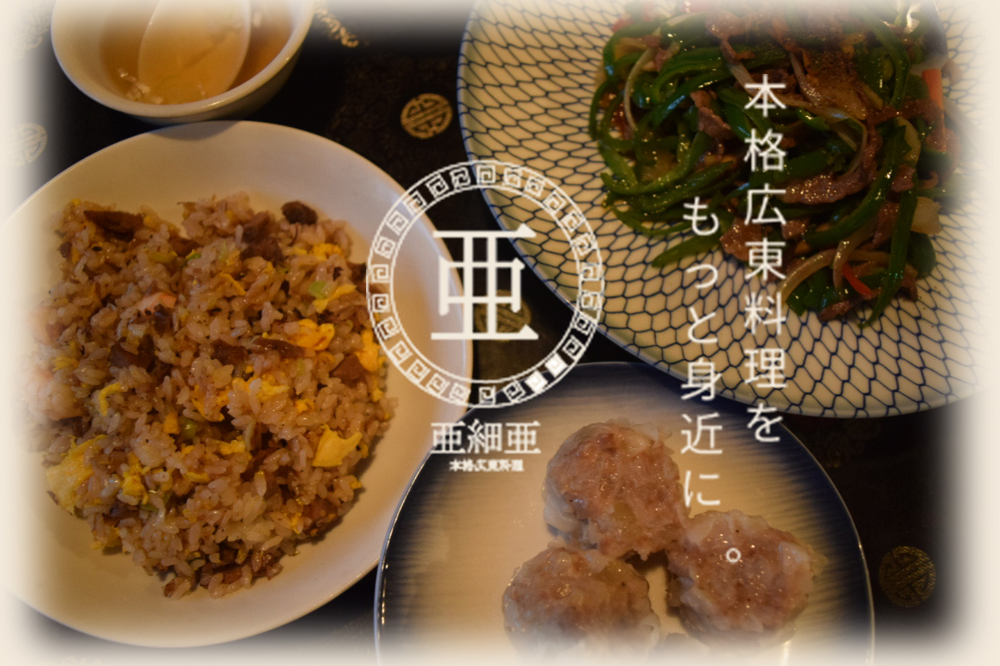
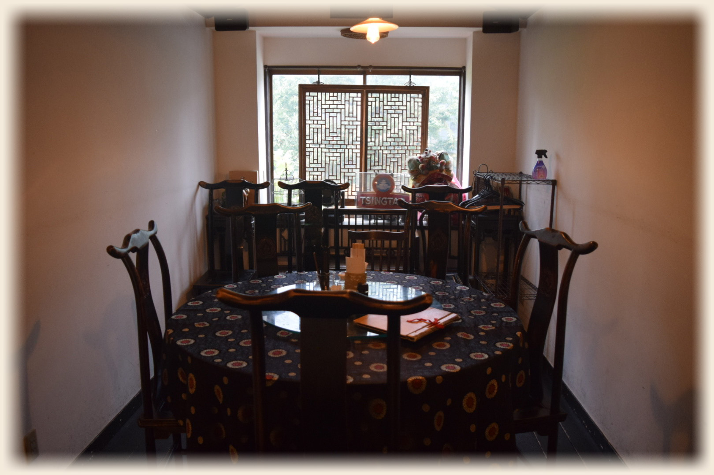
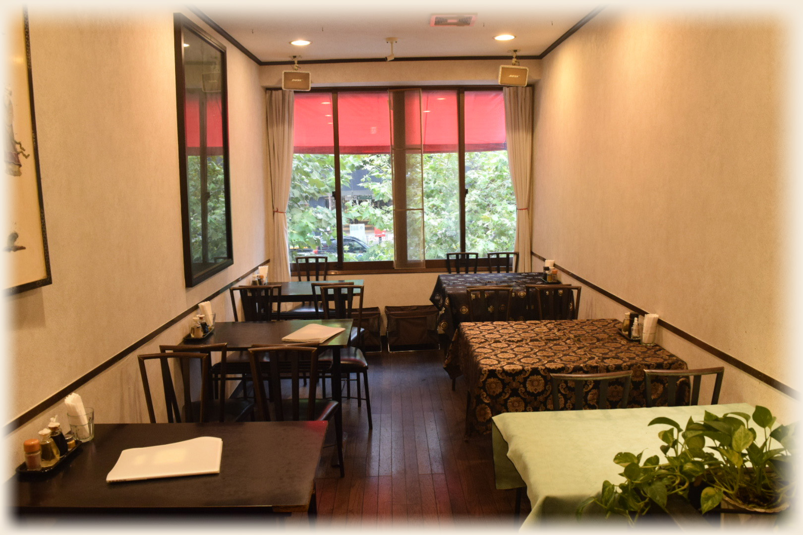

おすすめメニュー
日替わりランチ
￥８００（内税）
月曜～金曜（祝日を除く）
11：30～
14：00
本日の一品＋ライス、スープ、ザーサイ付き
おすすめコース
（2名様から）
1.蒸し鶏
2.酢豚
3.ふんわり卵とエビの炒め物
4.五目ぶつ切りうま煮
5.炒飯or焼きそば
6.ザーサイ
お一人様
￥3,800（内税）
特別コース料理
（要予約）
お一人様 ￥5,500～￥11,000
4名様～18名様くらいで承っております。
前菜、スープ、特別料理、麺or飯、デザートまで
料理内容のご相談承ります。
5名様～8名様で個室（3階）貸し切りできます。
テーブルチャージとして、
お一人様￥500を頂戴します。
定食
(ライス、スープ、ザーサイ付き)
二品定食（本日の揚げ物、五目うま煮）
￥2,200（内税）
三品定食（本日の揚げ物、酢豚、五目の
うま煮）
￥3,000（内税）
お席のご案内
個室
周りを気にせず、ゆったりとお過ごしいただける個室をご用意しております。
ご宴会から接待にもピッタリなお部屋です。

テーブル席
お一人様～
大人数まで、
様々なシーンにご利用いただけるテーブル席です。
